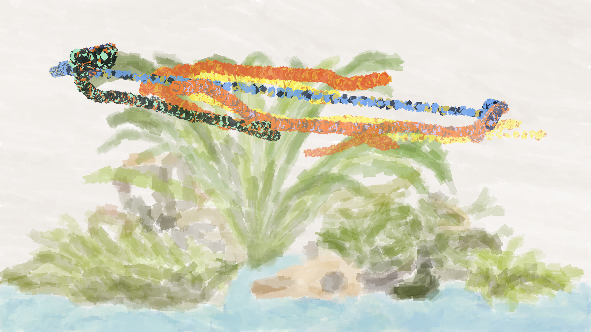

Fish Painting
Summer 2025, Summer 2026
After seeing a rat "paint" by running across a canvas with paint on its feet, I wanted a way to let my guppies "paint." Covering them in paint would not end well, so I made this program to track their motion and map it to a digital paintbrush.

Project Description
I made this using YOLOv11 to identify individual fish and track their motion across video frames. With a list of coordinates for each guppy, the code filters out misidentifications by removing points where the guppy appears to jump to another spot in the tank. Gaps in the guppy's path, such as when it is occluded by a leaf, are compensated for by filling in points between the last known coordinates. Each guppy gets its own paintbrush color, eyedropped from a photo of the fish.
This approach worked fine at first, but all of the guppies I trained the YOLO model on have since passed away, which revealed a failure mode. Retraining the model every time I get a new fish isn't practical, so my next goal is to implement Re-ID. An object recognition model trained to recognize fish, combined with Re-ID, should make this program work for any fish.
Github
Code for this project can be found at IsaacVanB/fish-painting.